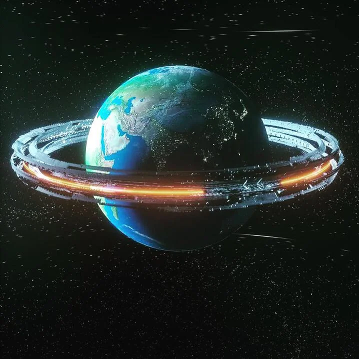

Autonomous navigation, telemetry, and communications infrastructure for next-generation space systems. Engineered from first principles to sustain mission critical assets at the frontier of human reach.
Self-correcting trajectory engines guide asset deployment in real-time past gravitational anomalies and debris fields across 5.2 AU.
High-frequency telemetry transmission across interplanetary distances with guaranteed sub-millisecond latency and signal protection.
On-board neural matrix balances propulsion parameters and autonomously optimizes fuel consumption in real-time.
Failsafe resonant localized shielding powers critical grid architectures dependably for over 30-year operational profiles.
Continuous system tracking paired with predictive pattern analysis registers system anomalies 400ms before component degradation.
Adaptive vector-shifting responds to solar winds and ion storms delivering incremental macro-course adjustments.
Continuous system tracking paired with predictive pattern analysis registers anomalies instantly across all infrastructure layers.

Physical hardware link handling ultra-low structural mesh distribution over vast distance matrix structures.
On-board adaptive computation matrices mapping ecosystem life-cycles.
Synchronized space network standards verified by global aerospace repository networks.
Join 987 missions already powered by Venus deep-space infrastructure. First probe blueprint free.